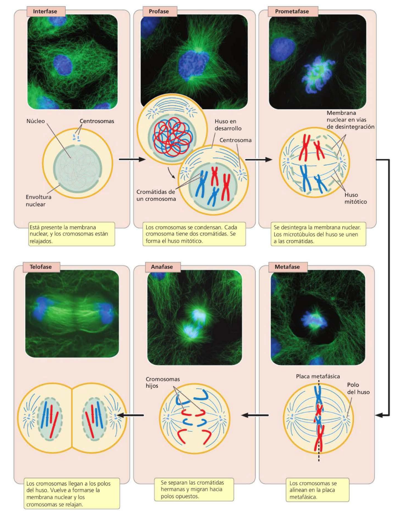

Cromosomas y reproducción celular:
ciclo celular y mitosis
Simulador académico interactivo sobre la organización del genoma eucariante, la dinámica cromosómica y los puntos de control que garantizan la fidelidad de la transmisión genética. Modelo didáctico 2n = 4 con defectos mitóticos específicos.


El acertijo de los hombres ciegos
Dos hombres ciegos entran por casualidad en una tienda y solicitan cinco pares de medias, cada par de un color distinto. El vendedor, aturdido por la coincidencia, coloca los diez pares en una única bolsa y se la entrega a uno de ellos, mientras que al otro le da una bolsa vacía. ¿Cómo pueden separar las medias sin ver, de modo que cada uno se lleve exactamente cinco pares de colores distintos?
La solución es simple: las medias se venden de a pares, unidas por un hilo. Al separar cada par tirando en direcciones opuestas, cada hombre obtiene una media de cada color, y al final ambos tendrán un conjunto completo e idéntico.
Este acertijo captura con precisión el problema central de la reproducción celular. Las células deben copiar su información genética, separar las copias y dividirse de manera que cada célula hija reciba un complemento cromosómico completo. Los errores en cualquiera de estos pasos tienen consecuencias graves: cáncer, abortos espontáneos o anomalías congénitas.
La cohesina es la molécula que mantiene unidas las cromátidas hermanas —el equivalente biológico del hilo que une las medias—. La separasa es la enzima que corta la cohesina en el momento preciso de la anafase, permitiendo la separación ordenada de las cromátidas.
A diferencia de los hombres ciegos, las células no pueden permitirse errores: una sola segregación incorrecta puede alterar el número cromosómico y comprometer la viabilidad de la célula hija. Este simulador permite explorar qué ocurre cuando componentes clave de la maquinaria mitótica fallan.
Procariontes y eucariontes: diferencias estructurales
Los organismos se clasifican tradicionalmente en dos grandes grupos: procariontes y eucariontes. Los procariontes incluyen dos linajes fundamentales desde el punto de vista evolutivo —las eubacterias y las archaea— cuya relación entre sí es tan distante como la que existe entre cualquiera de ellos y los eucariontes. Los eucariontes, en cambio, poseen una estructura celular compartimentada por membranas internas y un núcleo que separa físicamente el ADN del citoplasma.
Desde la perspectiva de la genética, la diferencia más importante es el empaquetamiento del ADN: mientras que en las eubacterias el ADN se encuentra en contacto directo con el citoplasma y no forma complejos estables con histonas, en los eucariontes el ADN se asocia con histonas para formar cromatina, un material altamente organizado y compacto.
| Característica | Procariontes | Eucariontes |
|---|---|---|
| Núcleo | Ausente; el ADN se encuentra en contacto directo con el citoplasma. | Presente; la envoltura nuclear separa el ADN del resto del contenido celular. |
| Diámetro celular | Relativamente pequeño, 1 – 10 µm. |
Relativamente grande, 10 – 100 µm. |
| Genoma | Por lo general, una sola molécula de ADN circular; ocasionalmente plásmidos. | Múltiples moléculas de ADN lineal organizadas en cromosomas. |
| Empaquetamiento | Sin histonas en eubacterias; algunas histonas en archaea. | Complejos de ADN e histonas (cromatina) altamente organizados. |
| Orgánulos membranosos | Ausentes. | Presentes: mitocondrias, retículo endoplasmático, aparato de Golgi, etc. |
| Cantidad de ADN | Relativamente pequeña. | Relativamente grande. |
Los virus no son procariontes ni eucariontes: carecen de estructura celular y están formados por una cubierta proteica que rodea al ácido nucleico (ADN o ARN). No pueden reproducirse por sí solos; dependen de la maquinaria de una célula huésped, lo que sugiere que evolucionaron después de las células, a partir de sus propios huéspedes.
Empaquetamiento del ADN eucariante
Si se estirara el ADN de un solo cromosoma humano, mediría varios centímetros de longitud —miles de veces más largo que el núcleo que lo contiene—. Para lograr este nivel extremo de compactación, la célula eucariante recurre a las histonas: proteínas básicas que actúan como carretes alrededor de los cuales se enrolla el ADN.
El complejo de ADN e histonas se denomina cromatina, y es el material del que están hechos los cromosomas eucariantes. Las histonas limitan el acceso enzimático al ADN, pero al mismo tiempo permiten su empaquetamiento ordenado y su descondensación regulada durante la transcripción.
Dos reglas simples para contar cromosomas y moléculas de ADN:
1) El número de cromosomas es igual al número de centrómeros funcionales.
2) El número de moléculas de ADN es igual al número de cromosomas cuando estos no están
replicados; y el doble cuando cada cromosoma posee dos cromátidas hermanas.
Anatomía de un cromosoma funcional
Cada cromosoma eucariante funcional contiene tres elementos esenciales: un centrómero, un par de telómeros y múltiples orígenes de replicación. La ausencia de cualquiera de ellos compromete la estabilidad y la transmisión del material genético.
| Elemento | Función principal | Consecuencia de su ausencia |
|---|---|---|
| Centrómero | Región estrechada donde se ensambla el cinetocoro, punto de anclaje de los microtúbulos del huso. | El cromosoma no puede ser traccionado hacia los polos y se pierde durante la división. |
| Telómeros | Extremos naturales de los cromosomas lineales; estabilizan el cromosoma y limitan la división celular. | Los extremos recién rotos se degradan; el cromosoma se vuelve inestable. |
| Orígenes de replicación | Sitios donde se inicia la síntesis de ADN durante la fase S. | El ADN no puede replicarse completamente antes de la mitosis. |
| Cinetocoro | Complejo proteico que se ensambla sobre el centrómero y sirve de anclaje a los microtúbulos del huso. | Imposibilidad de establecer biorientación y de superar el punto de control del huso. |
| Cromátidas hermanas | Dos copias idénticas del cromosoma después de la replicación, unidas por cohesina en el centrómero. | Sin cohesina, la segregación ordenada no es posible. |
Según la posición del centrómero, los cromosomas se clasifican en cuatro tipos: metacéntricos (centrómero en el medio, brazos de igual longitud), submetacéntricos (centrómero desplazado hacia un extremo), acrocéntricos (centrómero muy cerca de un extremo) y telocéntricos (centrómero en el extremo terminal).
Ciclo celular y mitosis en tiempo real
El siguiente simulador reproduce el ciclo celular de una célula eucariante diploide con 2n = 4 cromosomas. Al entrar en la fase M, el anillo del ciclo despliega progresivamente los nombres de las subfases de la mitosis, la visualización celular recibe énfasis y la simulación se ralentiza automáticamente para que el proceso pueda apreciarse con detalle. También es posible introducir defectos mitóticos específicos en genes y complejos proteicos clave.
Visualización celular
G1Ciclo celular
Contenido de ADN (2c → 4c → 2c)
Recuento de cromosomas y moléculas de ADN
| Etapa | Cromosomas (centrómeros) |
Cromátidas hermanas |
Moléculas de ADN |
|---|
Reglas: el número de cromosomas es igual al número de centrómeros funcionales. El número de moléculas de ADN es igual al número de cromosomas cuando no hay cromátidas hermanas, y el doble cuando las hay.
Resultado genético del ciclo celular
Desde una sola célula, el ciclo celular produce dos células que contienen las mismas instrucciones genéticas. Las células hijas son genéticamente idénticas entre sí y con respecto a la célula progenitora, porque la síntesis de ADN en la fase S crea una copia exacta de cada molécula, y la mitosis garantiza que una de las dos cromátidas hermanas de cada cromosoma replicado pase a cada célula nueva.
Otro resultado importante es que cada una de las células producidas contiene un complemento cromosómico completo: no hay reducción ni aumento del número de cromosomas. En cambio, cada célula hija recibe aproximadamente la mitad del citoplasma y del contenido de orgánulos de la célula parental original, aunque ningún mecanismo preciso análogo a la mitosis asegura que la división de los orgánulos sea uniforme.
Los errores en la segregación cromosómica son catastróficos. Los defectos en los puntos de control o en la maquinaria mitótica permiten que células con cromosomas mal segregados continúen dividiéndose, lo que produce aneuploidías: células hijas con número cromosómico alterado. En humanos, esto se asocia directamente con cáncer, abortos espontáneos y síndromes congénitos graves.